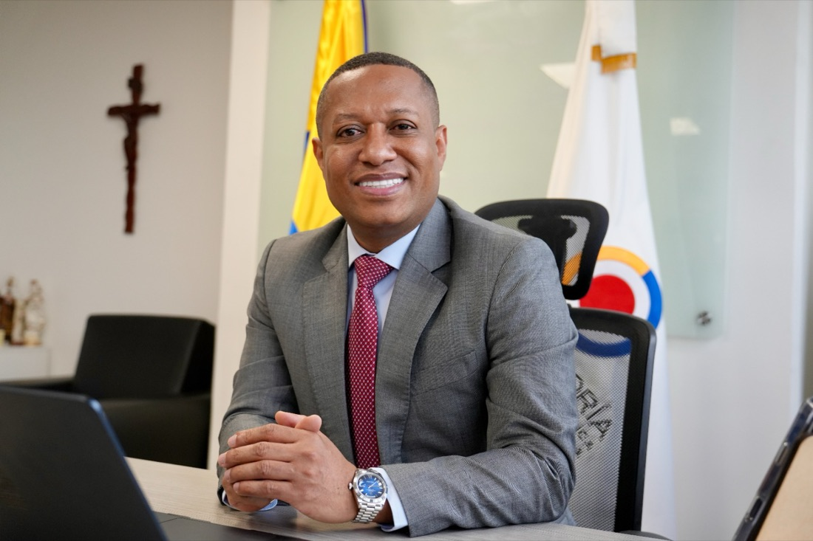

Abogado de la Universidad Tecnológica del Chocó, con trayectoria en derecho administrativo, control y responsabilidad fiscal, derecho disciplinario, contratación estatal y gestión pública.
Una carrera dedicada a la vigilancia de la gestión pública y la protección del patrimonio del Estado.

Una visión integral del sector público, construida a lo largo de una carrera en organismos de control, entidades territoriales y el Gobierno Nacional.
A lo largo de su carrera ha desempeñado funciones en la Contraloría General de la República, la Auditoría General de la República, la Defensoría del Pueblo, el Ministerio de Educación Nacional y diferentes entidades territoriales, consolidando una visión integral del sector público y la gestión estatal.
Ha ocupado cargos de alta dirección y asesoría en organismos de control, liderando procesos de vigilancia de la gestión pública, fortalecimiento institucional, defensa de los derechos humanos y asesoría jurídica, con amplia experiencia en la administración y protección de los recursos públicos.
Su experiencia se complementa con una destacada trayectoria académica como docente universitario de pregrado y posgrado en derecho administrativo, derecho constitucional, responsabilidad fiscal y derecho disciplinario, contribuyendo a la formación de profesionales y al fortalecimiento del conocimiento jurídico.
Un recorrido por los organismos de control, entidades territoriales y espacios académicos donde ha ejercido su labor.
Vigilancia de la gestión pública y control fiscal de los recursos del Estado.
Fortalecimiento institucional y control fiscal desde la alta dirección y la asesoría.
Defensa y promoción de los derechos humanos en el ejercicio de la función pública.
Asesoría jurídica y gestión pública en el Gobierno Nacional.
Cargos de alta dirección y asesoría jurídica en la gestión pública territorial.
Profesor de pregrado y posgrado en derecho administrativo, derecho constitucional, responsabilidad fiscal y derecho disciplinario.
Doce títulos entre doctorado, maestrías, especializaciones y diplomados, cursados en Colombia y Argentina.
Universidad de Manizales
Universidad Externado de Colombia
Universidad de Medellín
Universidad Nacional Lomas de Zamora, Argentina
Universidad Externado de Colombia
Universidad Libre, Pereira · Universidad Cooperativa de Colombia
Universidad Cooperativa de Colombia
Universidad Distrital Francisco José de Caldas
Universidad de Medellín
Universidad Pontificia Bolivariana
Escuela Roberto Camacho Weverberg, Defensoría del Pueblo
Universidad Tecnológica del Chocó Diego Luis Córdoba
Navegue directamente a cada propuesta desde el índice o recorra la lista completa.
Priorizar un modelo de control fiscal que actúe antes de que se produzca el daño al patrimonio público, con énfasis en la prevención y no únicamente en la identificación de hallazgos.
Implementar una gestión enfocada en proteger los recursos públicos, entendiendo que el verdadero éxito de la Contraloría radica en evitar la pérdida de recursos y no en aumentar el número de investigaciones o hallazgos.
Acercar la Contraloría a los territorios mediante un mayor acompañamiento a las regiones para contribuir a que las obras públicas se ejecuten oportunamente y respondan a las necesidades de la ciudadanía.
Garantizar un ejercicio de control fiscal independiente, sin interferencias políticas, basado en evidencia, rigor técnico y respeto por el debido proceso.
Radicar un proyecto de ley para fortalecer el proceso de responsabilidad fiscal y el cobro coactivo, con el propósito de agilizar el resarcimiento del daño ocasionado al patrimonio público.
Fortalecer la cooperación entre la Contraloría, los demás organismos de control y la sociedad civil para mejorar la coordinación institucional y promover un control fiscal participativo.
Implementar una Plataforma de Control Público Unificado que permita hacer seguimiento en tiempo real al avance físico y financiero de las obras públicas mediante alertas automáticas para identificar riesgos de forma temprana.
Desarrollar un sistema nacional de numeración única para los contratos estatales que permita consultar su trazabilidad completa y facilite el control ciudadano sobre la contratación pública.
Fortalecer los mecanismos de auditoría mediante el cruce de información con la DIAN para verificar los costos reportados por contratistas y detectar posibles inconsistencias o sobrecostos en la contratación pública.
Impulsar un proyecto de ley para modificar la Ley 87 de 1993 y fortalecer el papel de las cerca de 7.000 oficinas de control interno del Estado, permitiéndoles ejercer vigilancia preventiva desde la etapa de planeación y durante la ejecución de los contratos.
"El verdadero éxito del control fiscal se mide en los recursos que se protegen, no solo en los hallazgos que se reportan."